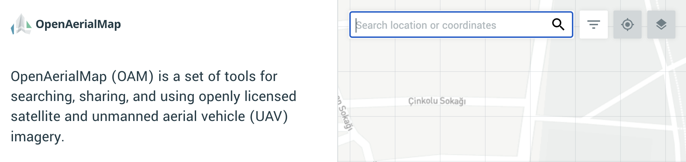
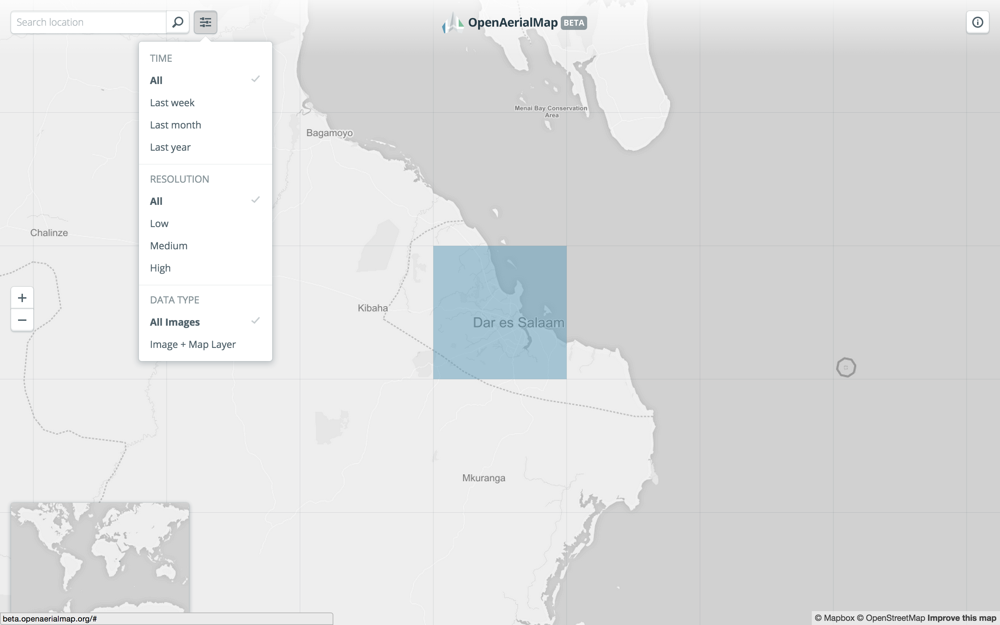
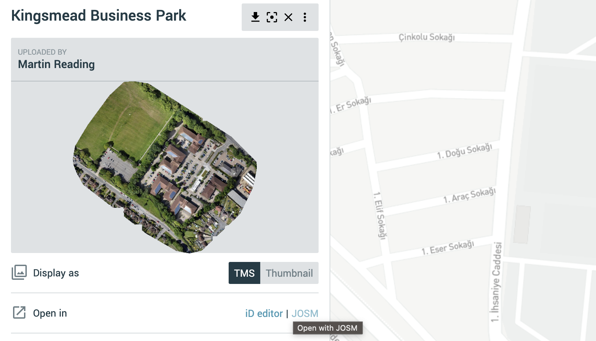
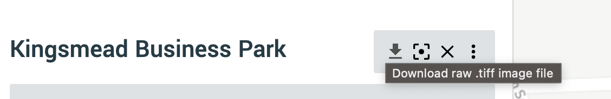
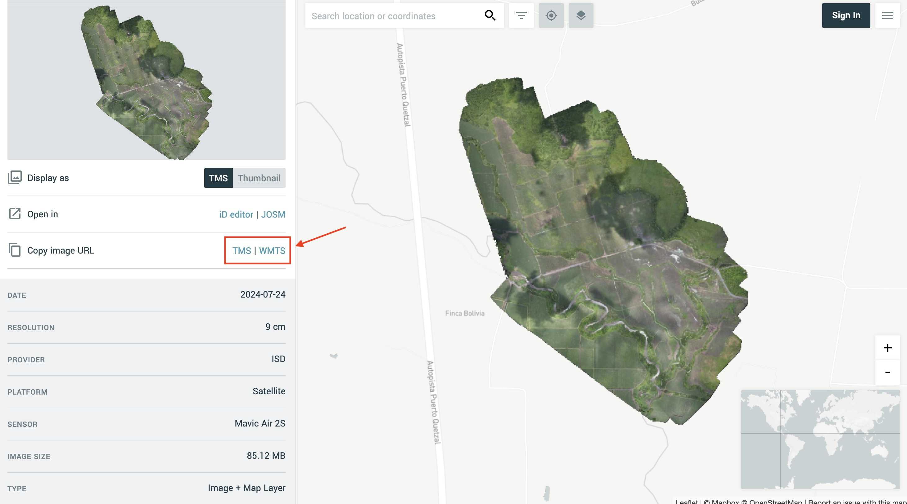
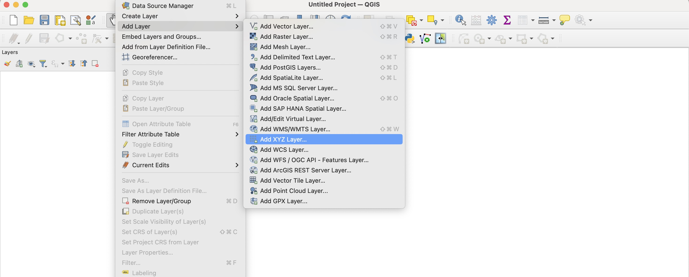
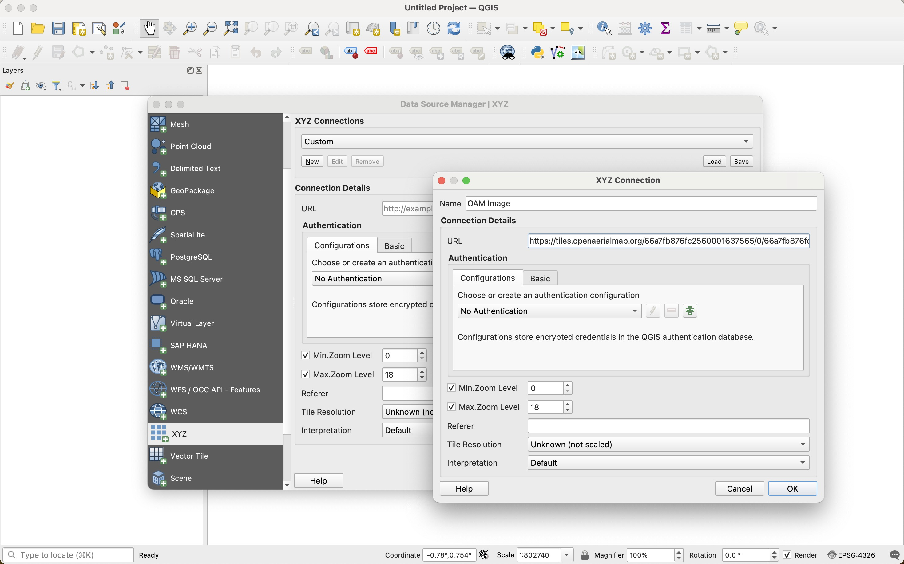
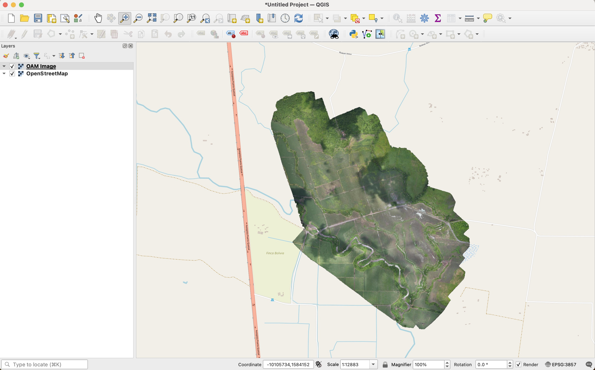

User Guide
How to use?
OAM can be used with a web browser. Simply search by location to find imagery available in a given area of interest. Each area can be selected to view available imagery as well as details about each image.
The OAM search interface focuses on two main core functions:
- Searching by location and metadata
- Using available imagery
OAM can be used within any modern browser (Chrome, Firefox, Edge).
Searching by location
When first visiting the application, initial search can be accomplished by typing the location of an area into the search box.

Filtering searches
Use the filter button in the upper left of the application to filter available imagery by time, resolution, and data type.

Using imagery in iD or JOSM
When an image has been found and has an available map layer, you can use the dropdown menu to open the map layer up in an OpenStreetMap editor like iD or JOSM.

Downloading imagery
Use the Download button to download the raw imagery in GeoTIFF format. File size is listed in the additional metadata information below the image preview in the sidebar.

Using imagery in QGIS
By clicking on the TMS or WMTS button it is possible to copy links to each Web service and use them to access imagery directly in QGIS.

In QGIS, from the “Layer” menu, choose “Add Layer” and then “Add XYZ Layer”

In the “Data Source Manager | XYZ” window click on “New”. In the pop-up window choose a name for the image and paste the TMS copied from OAM in the URL box. Consider increasing the Max Zoom level value to 21 if you’re adding a very high resolution image.

Click OK, and then Add. The image will be displayed in the map as a new TMS/XYZ image layer
